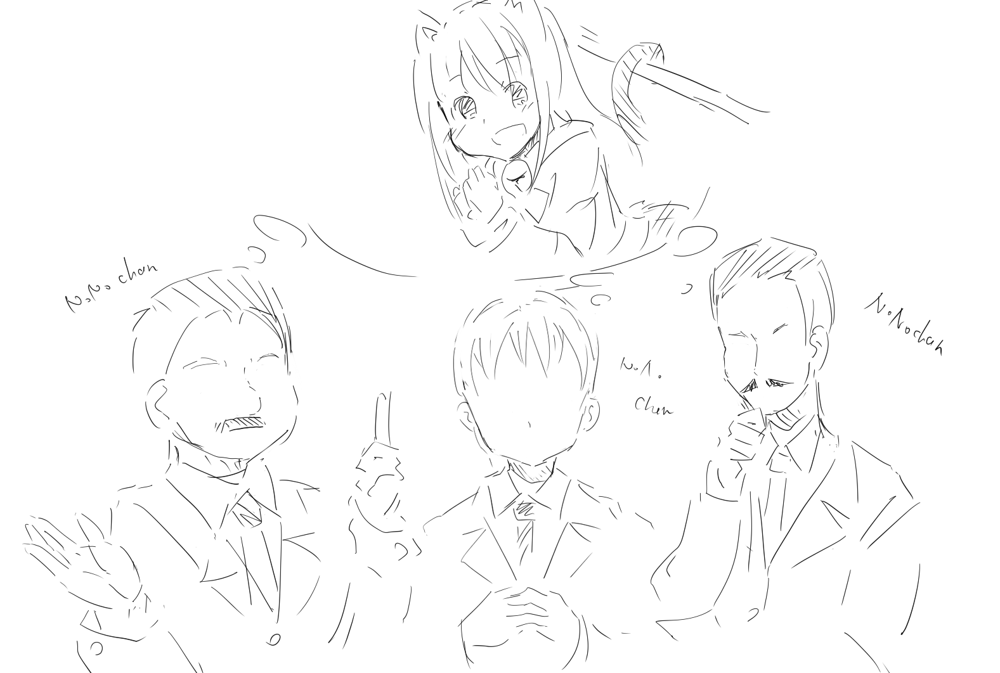
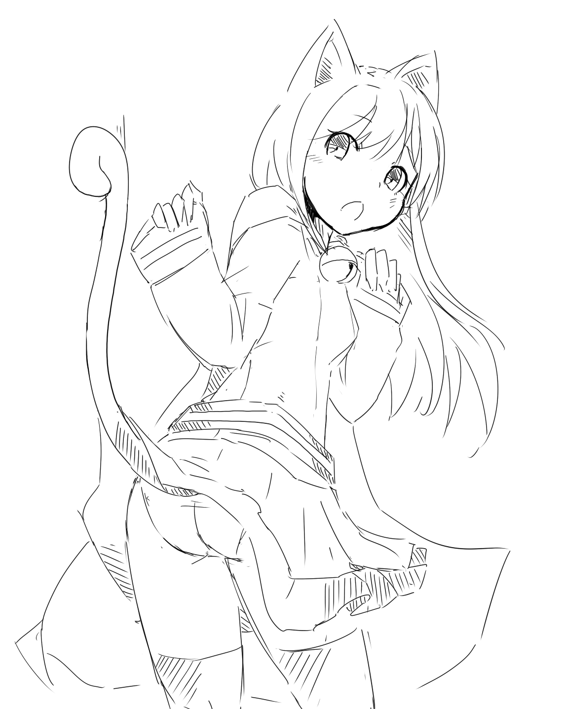

ノノルーム史
●創世記-黎明期
～ノノルーム特有の風土形成～
〇メルストのサービスが開始される
android（2014/1/31）
iOS (2014/2/18)
ルームの割り当てはランダムであったため
最初に割当てられたルームに定着することが多い
しかし、一部のユーザ(ノノちゃんに魅了された紳士)たちが
徐々にノノルームへ終結する(古代ノノルーム民)
この時各ルームから集まった紳士たちが皆々ノノちゃんのことを
ノノちゃんのアイコンで語らうため独特の雰囲気が形成される
もちろんアイコン＝救援者なので救援はほぼすべてノノちゃんである
※ルーム＝人数制限のないギルドみたいな雰囲気があった

当時の挨拶は
・こんにちののちゃん
・おはようののちゃん
・こんばんののちゃん
とののちゃんに対する挨拶であふれていた
また、アイコンが発言しているようなチャット画面のため
ののちゃんになりきり口調をまねして楽しむ紳士もいた
・おはようなんだよ～
・悪いモンスターさんはののがおしおきなんだよ

画像は筆者が「癒術師の側からののちゃんを見ていた場合
パンツみえるんじゃないだろうか」という議題を呈したときに描いた参考画像である
このままパンツの色や柄の議論へと発展した
当時の様子がわかる書き込み
http://spch.blog.jp/archives/1000212352.html
14：名無しさん＠お腹いっぱい。 2014/03/02 23:05:245+5qh2OH
ルームで「助けて下さい！」って書き込むと
お前ら本当に助けてくれるんだな
約2分でメルストの紹介映像と同じくらいゾロゾロ出てきて焦ったわ
17：名無しさん＠お腹いっぱい。 2014/03/02 23:07:125cWgwKko
>>14
ノノルーム行くとノノ軍隊が来るぞw
21：名無しさん＠お腹いっぱい。 2014/03/02 23:10:31VE+rg9gP
ノノルームは平和でいいな
ノノちゃんまだ持ってないけどフォローしてひたすらROMってるわ
22：名無しさん＠お腹いっぱい。 2014/03/02 23:11:15MI7x1/hr
ノノルームは幸せの国だよなー
ノノちゃん！ノノちゃん！
サービス開始2か月後のことである...
●黎明期-旧ノノ
〇沼地の主ペタルデス出現！2014/03/03 ～ 2014/03/10
～メルスト初のミニイベント開催～(たぶん)第一回ノノルーム救援祭り～
初のイベント実装もあって難易度が高く救援を求める声が大きくなる
各ルームではイベントをクリアしたい人たちで救援祭りが開催される
そんななかノノルームでも救援祭りが開催されることになった
このときルームにて主催を務めた人物(ここでは紳士Aと呼ぼう)
により第一回ノノルーム救援祭りが開催されることになる。。。2014/03/06
その様子を以下のブログにて見ることができる
※ほかのルーム民からみたら異様な空間であったらしい
http://gameyatteki.jugem.jp/?eid=390
このあと第二回も紳士Aにより開催され盛況に終わる。。。
紳士Aは当時のノノルーム民のみで形成されるギルドを結成する。
「猫しっぽ耳」
ギルドバトル実装 2014/03/25
ギルドバトルの実装によってこれまでの紳士の集いであったルームの雰囲気に変化をもたらす
これまで四六時中ののちゃんを愛でていた紳士たちがギルバトの時間は静かになるのだ
四六時中救援を送り続けていた人々もギルバト中には救援をするなという人も現れる
※当時 アースドラゴンが猛威を振るっており ノノちゃんは前衛ユニットのため
アースドラゴンの攻撃開始位置まで前進してしまい味方ユニットが攻撃に巻き込まれ全滅する事故が多発していた
このような空気を嫌う人々が徐々に離れ始める
救援をだすならリーチ160を超えるユニットがマナーという風潮ができはじめる
先ほど記述したがアイコン＝救援のためこのあたりからノノちゃんアイコンが減少しはじめる
紳士Aもこのあたりを境にから姿を見ていない
●旧ノノ-新生ノノ
〇古の女王と石造りの墓守 実装 2014/03/31 ～ 2014/04/18
～ののちゃんに魅せられた緑色の丸いやつ(紳士M)出現～
緑色のホプライト(打撃☆1♀)をののちゃん(打撃☆2♀)と言張る禁断症状がでていたヤベーヤツ
この紳士Mにノノちゃんで救援を出すことがある種の挨拶みたいなことになっていた
そんななかルーム内の紳士がアプリを落とすと何度でも同じ人に救援を出せることを発見する
これによりルーム救援勢に革命がおこる
古の女王と石造りの墓守イベントをクリアするため第三回ノノルーム救援祭りが開催されることになる
このとき主催を務めたのが紳士Mである
新しく得た救援方法を採用し救援熱が高まり、ダイヤを砕いてまで救援する猛者まで現れる。
この救援祭りの熱が冷めぬまま参加者の多くがツイッターでつながることになる・・・
(一部が盛り上がりすぎたため よそでやろうということになったのは内緒 2分でコメントが流れる始末)
第一次ノノルームツイッター登録祭りである。 2014/4/19
一説にはこのとき救援ボタンを求めるあまりにボタンの亡者と化した紳士が発した言葉
ボタン...ボタン...ボ..ボボボボ...
がのちの世に伝わったとかないとか...
たまに見られる救援行為時の「ボ」の原型かと思われる
紳士Mと特にヤバイヤツラでギルドが作られ隔離病棟と呼ばれるようになる
「愛の巣」
このあたりからののちゃんからののたそという呼称が流行り始める
ののたそ～
(氷菓の千反田えるのことをえるたそ～からの流入だと思われる)
･･････
その後メルストにてレイドモンスター、レアメダル、レターピースといった様々なコンテンツが追加される
※やることが増えるたびに やることに追われノノちゃんを愛でる時間が減っていく
依然としてノノルーム特有の雰囲気がありほかのルームからはヤバイヤツラの巣窟とみられていたのは過言ではない
(ノノルーム所属は一種の状態異常みたいな扱いだった)
～旧ノノの終焉～
ティーゼアイコンのやつが現れ自治権を主張する
自由と平和を愛する住民と対立が起こる...
一部は声を殺し(ROM専)
一部は別ルームへ
一部はメルストを去った...
～そして新生ノノルームへと続く...
●新生ノノ-現代ノノ
現在は自分の目で確かめよう